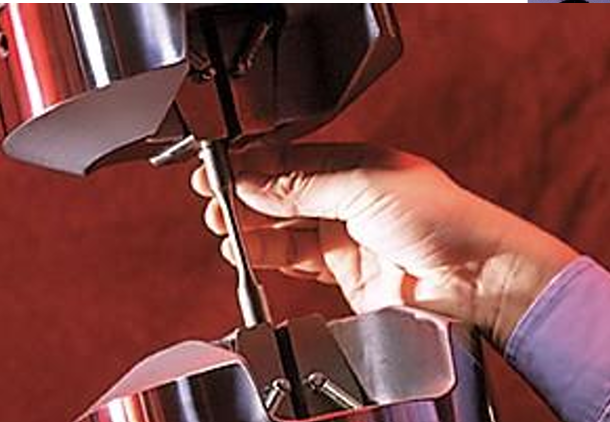

When in service, materials are subjected to different types of loads and forces (such as tension, compression, bending, shear, and torsion). The application of a force causes a material to change its size and shape—a process known as deformation.
Stress normalizes the force applied over the cross-sectional area. The unit is Pascals (N/m2). Because a specimen stretches and thins out under tension, it can be calculated in two ways:
σ = F / A0 (Force divided by the initial cross-sectional area).σT = F / Ai (Force divided by the instantaneous area).Strain represents the dimensional change with respect to the original dimensions.
ε = (l - l0) / l0εT = ln(li / l0)
The mechanical properties of a material are primarily studied by performing a Tensile Test. A standard "dog-bone" specimen is clamped into a testing machine that elongates it at a constant rate. A load cell measures the instantaneous force, while an extensometer measures the elongation. This generates a Force-Elongation curve, which is then converted into a Stress-Strain diagram.
Note: For highly brittle materials (like ceramics and glass) that cannot be easily gripped without breaking, a Flexural Test (bending) is used instead to find the Modulus of Rupture (MOR).